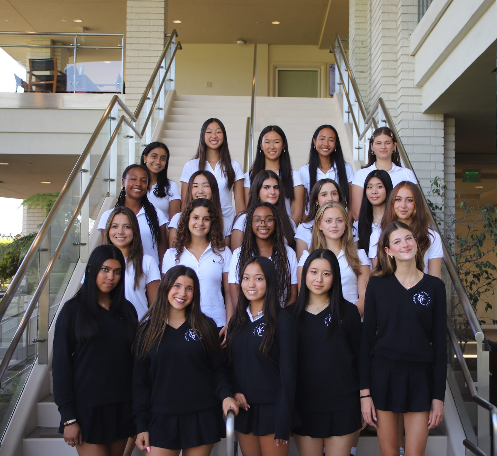
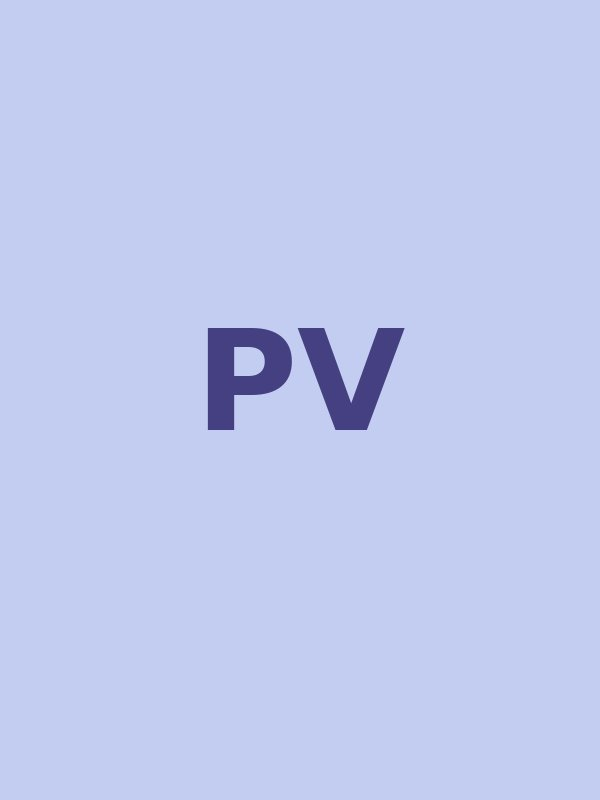
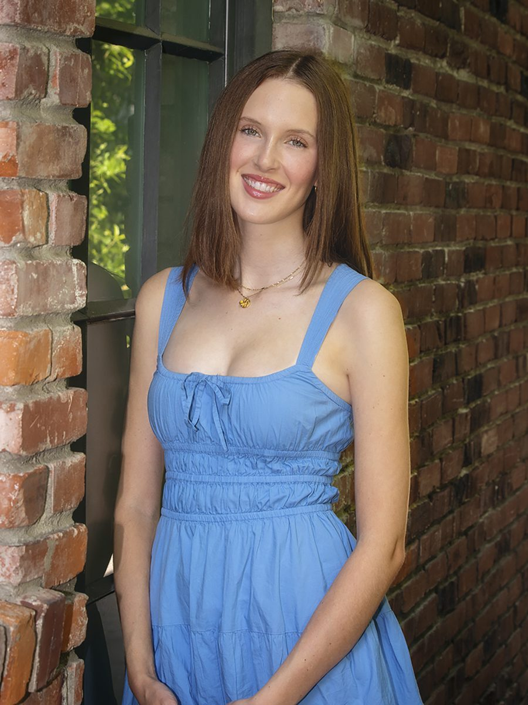
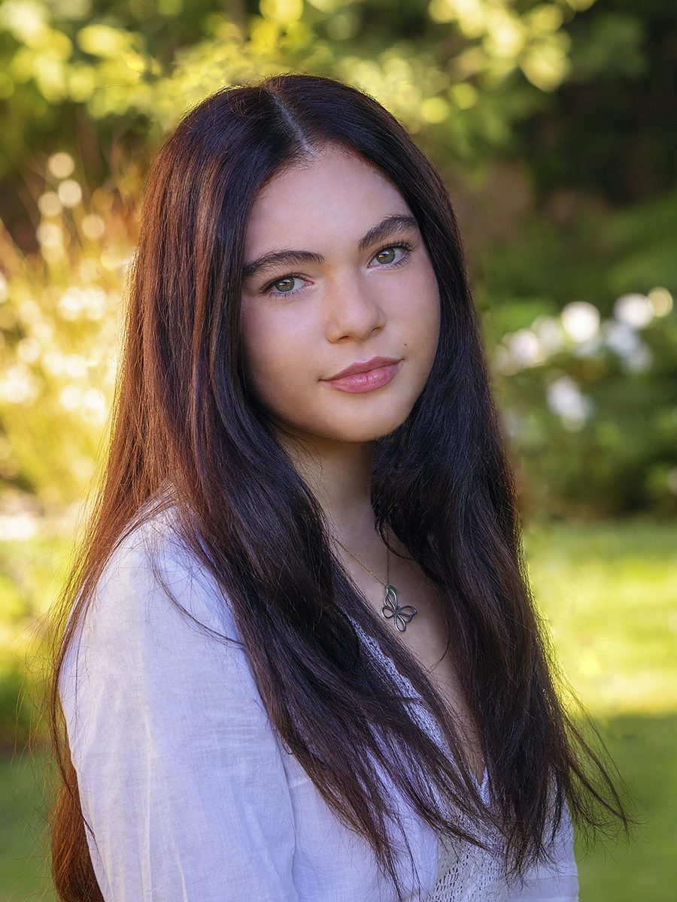
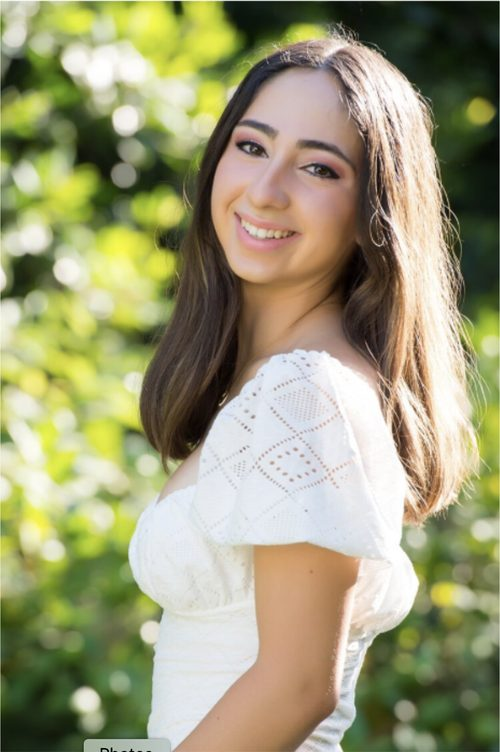
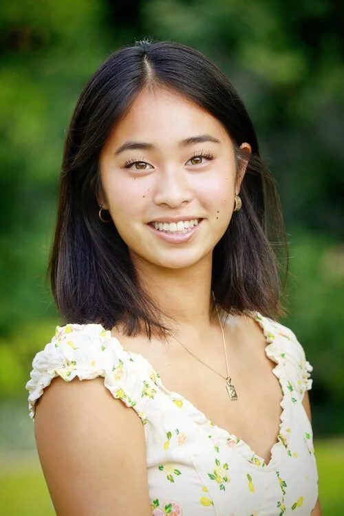
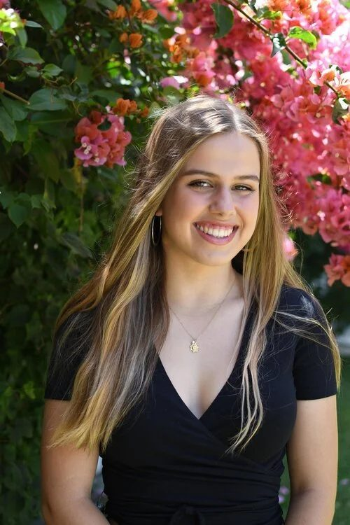

Our Board
We are ten juniors and ten seniors of Marlborough School in Los Angeles who sit on the board of the student-initiated, donor-advised charitable fund of Violets' Giving Circle. This two-year position alternates each year between fundraising and grant-making. We meet weekly, contribute funds, and have responsibilities similar to a typical workplace boardroom.
Our goal is to donate money to organizations that provide educational opportunities for women and girls both inside and outside of the classroom.

2026/27 Board
(From left to right) Top row: Surya Muthyala ’28, Kira Chang ’28, Colette Wang ’27, Nico Ray ’28, Donevan Cahill-Gurr ’28. Second row: Addison Kyle ’28, Daisy Yeon ’27, Katherine Berberian ’28, Olive Plager ’27, Joy Wei ’28. Third row: Elle Rosenthal ’28, Greta Gilison ’27, Harlem Williamson ’28, Kate Kinnear ’28, Mila Bakhshandepour ’27. First row: Jiya Murrell ’27, Mia Morgan ’27, Stella Pathak ’27, Ellis Yeom ’27, Aela Epstein ’27
Meet Our Current Co-Chairs
Stella Pathak ’27
“Violets’ Giving Circle has provided a framework of what it means to be a community member, in its truest form. As a board, we have formed an unforgettable sisterhood, and it’s been incredibly fulfilling to see our work pay off to help give back to our Los Angeles community. I am so proud to be a part of a group that values collaboration and leadership in the highest regards.”
Mia Morgan ’27
“Violets’ Giving Circle is a unique community and culture that extends way beyond the Marlborough boardroom. VGC has taught me that being a good leader is not a measure of you, yourself, but instead a measure of the collaborative efforts of each individual on your team. I am extremely honored to be a part of this sisterhood and proud of the tangible impact of our work in Los Angeles.”
Past Co-Chairs
Class of 2026
Ria D. ’26
[Quote to be added]

Paloma V. ’26
[Quote to be added]
Class of 2025

Channing B. ’25
[Quote to be added]

Jade C. ’25
[Quote to be added]
Class of 2024
Talia Z. ’24
“Being part of Violets’ Giving Circle has taught me that there is no limit to what can be achieved when you are surrounded by passion and driven change makers. We are dedicated, resilient, and unwaveringly committed to helping girls and women receive educational opportunities. I am extremely proud to help lead a group that makes a tangible difference in Los Angeles, a community that means so much to me.”
Juliana O. ’24
“Violets’ Giving Circle has been the most impactful experience of my academic career. VGC has taught me what it means to take initiative through direct action, and what a goal-oriented group of women can accomplish. As a board, our leadership, hard work, and collaboration have taken us further than I could have ever imagined.”
Class of 2023
Ava M. ’23
“I’m so proud to be a part of such a self-driven group of young adults who have an unwavering goal to benefit the lives of women and girls through educational opportunities. Violets’ Giving Circle has taught me the principles of leadership and resilience, two qualities that have allowed us to give back to our community in the form of concrete social change.”
Lila S. ’23
“What makes Violets’ Giving Circle so special is how we are able to take our education and privilege as Marlborough students and learn through taking action; I have learned so much about how to lead and conduct business, all while raising money to further educate women and girls in the Los Angeles community.”
Class of 2022

Emma Z. ’22
“Violets’ Giving Circle has taught me how to advocate for myself and my community. Working with strong people, on the board and those we serve has inspired me to communicate effectively and clearly with others about my needs and the needs of those around me.”
Marcella T. ’22
“Being a part of the Violets’ Giving Circle board has taught me just how influential twenty passionate young women can be. Through collaboration and perseverance during a truly difficult time, we have been unstoppable in continuing to positively affect the lives of women and girls and spreading joy throughout our wonderful community.”
Class of 2021

Audrey L. ’21
“Violets’ Giving Circle has given me a voice; it’s given me the courage to speak up and be heard. What’s more, VGC has made me recognize the unshakable power in our collective voices, and the wonderful fact that we can use them to expand crucial education opportunities for women and girls.”
Lucy R. ’21
“Violets’ Giving Circle has taught me how to advocate for myself and my community. Working with strong people, on the board and those we serve, has inspired me to communicate effectively and clearly with others about my needs and the needs of those around me.”
Class of 2020

Lily L. ’20
“Violets’ Giving Circle has encouraged me to use my voice and has given me skills to make a true difference. I feel truly empowered from this experience to go out into the world and enact positive change within my community and the world around me.”
Blanca D. ’20
“What makes Violets’ Giving Circle unique is who we are. Many people underestimate us because of our age and gender, but there is so much more to us. We are tenacious, composed, independent, grateful, hopeful, and empowered.”
Our History
Violets' Giving Circle was previously known as Marlborough School Charitable Fund. We were founded by a group of students in a finance focused program called Dollars and Sense. The current structure as a giving circle and charitable fund was formed under the guidance and leadership of The Women's Foundation of California who remained our fiscal sponsor until 2017. We are indebted to those who came before us and grateful for those who will come after.
In the News
2016-2017 Co-Chairs Alexa and Allegra along with the Violets' Giving Circle Board were featured in an ABC segment of "Cool Kids"
"I think the important part about Violets' Giving Circle is recognizing that we're so similar, but also so different from these girls [that we help]. We're girls and we're women in Los Angeles and we have shared experiences, but we're also very different in that we're super privileged to be at Marlborough and to receive the education that we have and a lot of girls don't get that."
Alexa B., Co-Chair 2016-2017